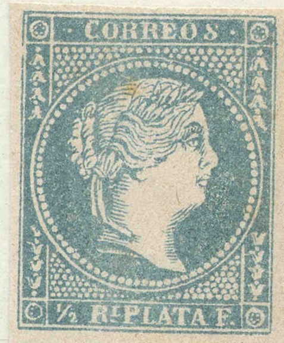
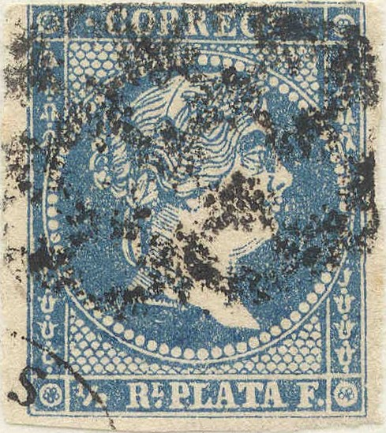
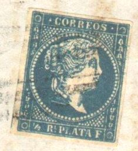
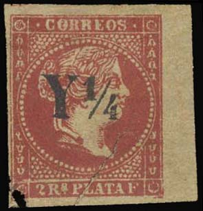

{kind=link}


Return To Catalogue - Cuba 1855-1863 (Spanish Westindies) - Cuba - Porto Rico
Note: on my website many of the
pictures can not be seen! They are of course present in the
catalogue;
contact me if you want to purchase it.

(Postal forgeries)
The above postal forgeries of the 1/2 r have 79 pearls in the circle (should be 73), furthermore there is a line of unbroken dots below the word 'CORREOS' (in the genuine stamps, the dots are broken below 'RRE'. The dots do not continue to the right margin in the genuine stamps, there is a small blue space, in this forgery they do continue and there is no such space. The 'S' of 'CORREOS' is slanting to the right in this forgery and is placed too far from the preceding 'O'. The Queen looks rather snobbish. This forgery is the second one mentioned in 'Postal Forgeries of the World' by R.G. Leslie Fletcher. If I'm well informed this forgery is known as 'Havana forgery' and is the most common postal forgery of the 1/2 r value. It was printed in sheets of 170 stamps (10 rows of 17 stamps). A similar postal forgery exists of the 1 r value.


I think the above stamp is the third postal forgery mentioned in 'Postal Forgeries of the World' by R.G. Leslie Fletcher; there are 73 pearls in the circle, the background dots are very irregular. The 'S' of 'CORREOS' is slanting to the right. If I'm informed correctly, this forgery appeared from 1861 to 1864.
Besides these postal forgeries, there are three more postal
forgeries of the 1/2 r value; two of them with 75 pearls, the
last one with 73 large pearls printed on white paper.
I've been told that the next stamps are also postal forgeries, however, I have not been able to identify them in Fletcher's book (the background dots seem very irregular):


Postal forgeries with the laurel leaves not very well developed.
The face of the Queen is rather strange. There is a break in the
white frameline below the 'P' of 'PLATA'. The 'C' of 'CORREOS'
has a larger top part and appears to slant to the right. From a
distance, the '2' of '1/2' looks like a '3'.


Postal forgery with the '1/2' too wide and the word 'PLATA' quite
badly done (left leg of the second 'A' of this word curved). This
forgery was first recorded in 1859.


Postal forgery with bottom row of pearls curved instead of
straight. The eye is rather different from the genuine stamp. The
left bottom corner is rounded. This forgery appeared in 1860 to
1862.

Postal forgery with 'C' of 'CORREOS' almost closed. This forgery
was reported from September to December 1861.

There is too much space between the circle and the top
inscription in this postal forgery. There are 4 curly ornaments
in the lower right side (only 3 1/2 ornaments in the genuine
stamps).
Another forgery (I've been told that this is also a postal forgery):

I've been told that the next stamps are also postal forgeries, though they are not mentioned in Fletcher's book:


(Other postal forgeries)


A postal forgery(?) of the 1/2 r value with a very pronounced
'eye'. Next to it some forgeries of the 2 r and 'Y1/4' on 2 r
values, apparently made by the same forger.
According to Fletcher's book, there is also a postal forgery of the 1 r value; this one has 79 small pearls in the circle (instead of 73 of the genuine). However, I've been told that the next stamp is also a postal forgery:

First postal forgery of the 1 r value, it is identical to the 1/2
r forgery shown above. The Queen has a 'snobbish appearance'. The
'S' is placed too far from the 'O' in 'CORREOS'. There are four
full ornaments in the right hand bottom side, while there are
only 3 1/2 in the genuine stamp. This is the so-called 'Havana'
forgery and is not very common used since the forgers were
arrested by the authorities.

Second type postal forgery of the 1 Rl value with 74 pearls. The
head of the Queen is quite bald. The '1' has a missing right
bottom serif. The top of the 'S' of 'CORREOS' is too rounded. The
central circle is perfectly centered (in the genuine stamps there
is slightly more space at the left hand side between the circle
and the outer frame). This forgery appeared from 1859 to 1863. It
was used in Havana and Matanzas.

The third type of postal forgery of this issue has smaller
pearls, the 'F' has no bottom serifs. The chin of the Queen is
different.
{kind=link}
{kind=link}